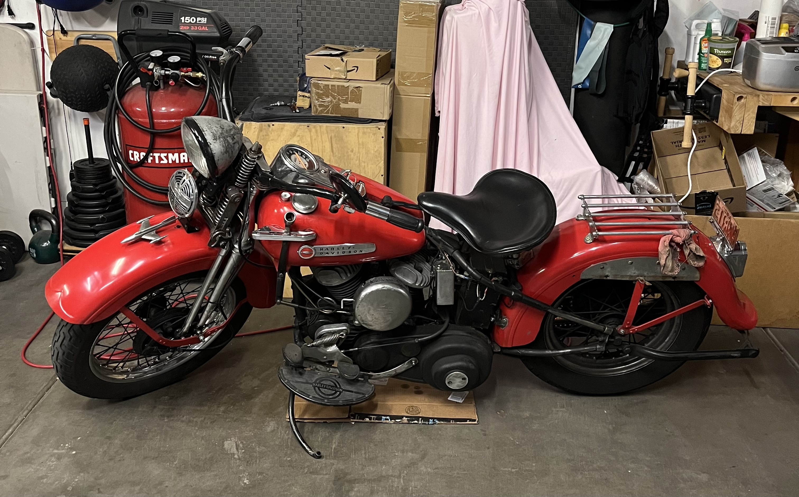
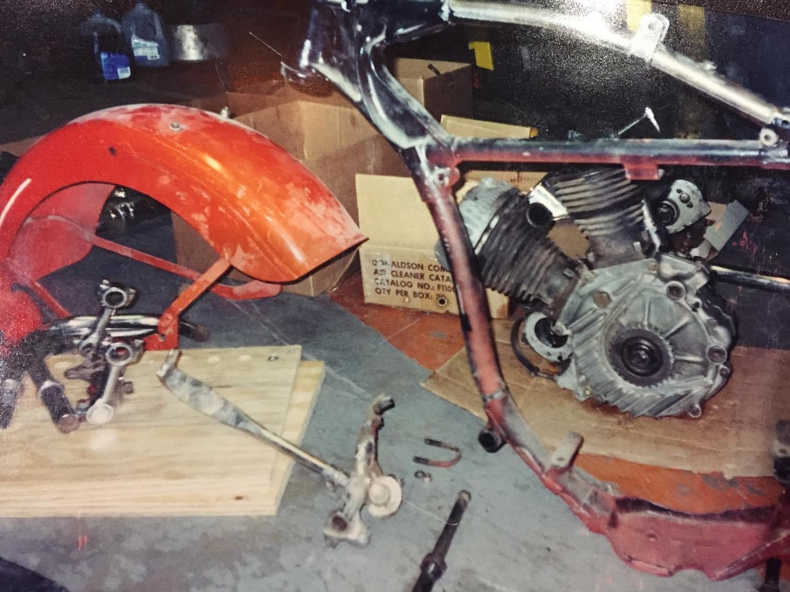
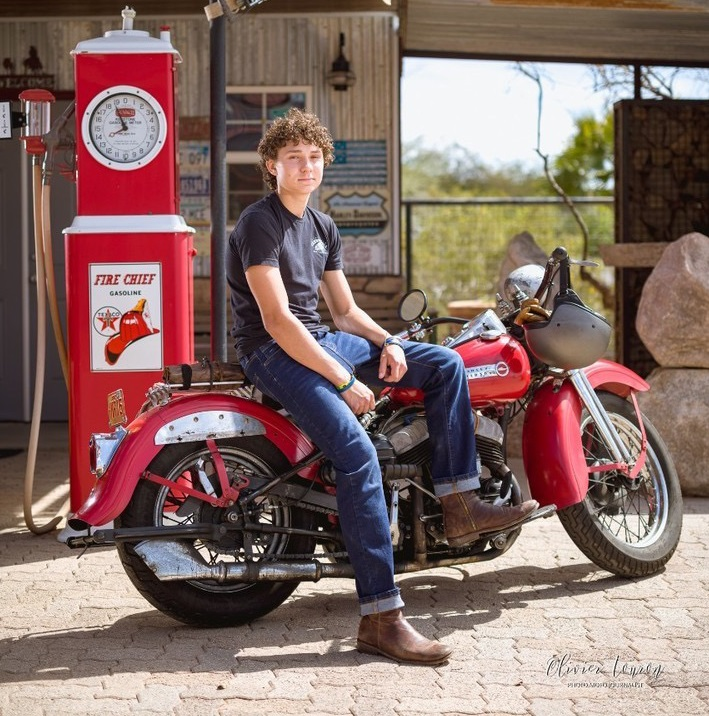
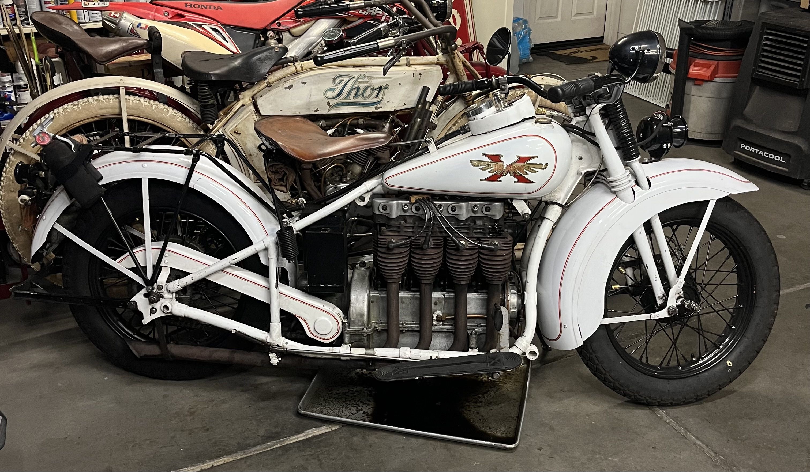
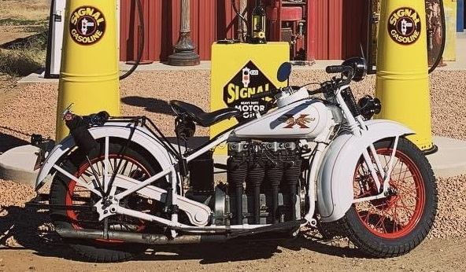
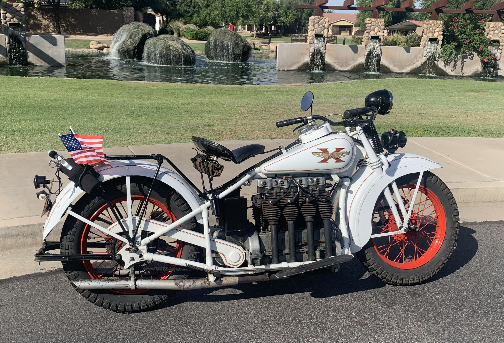
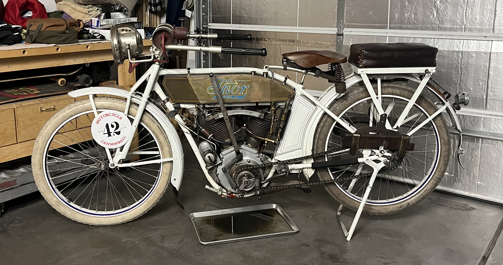
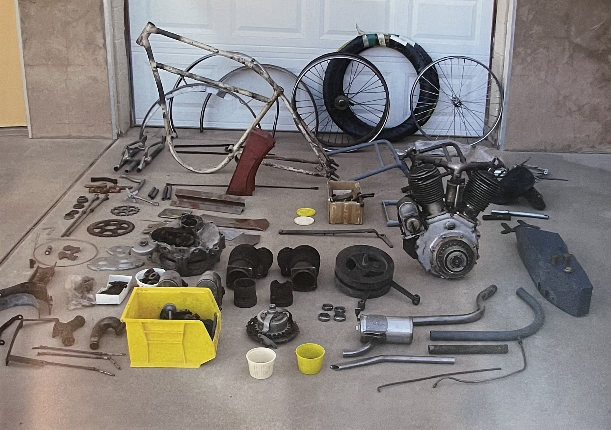
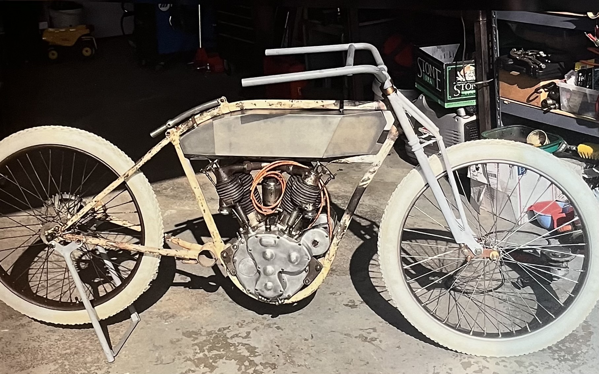
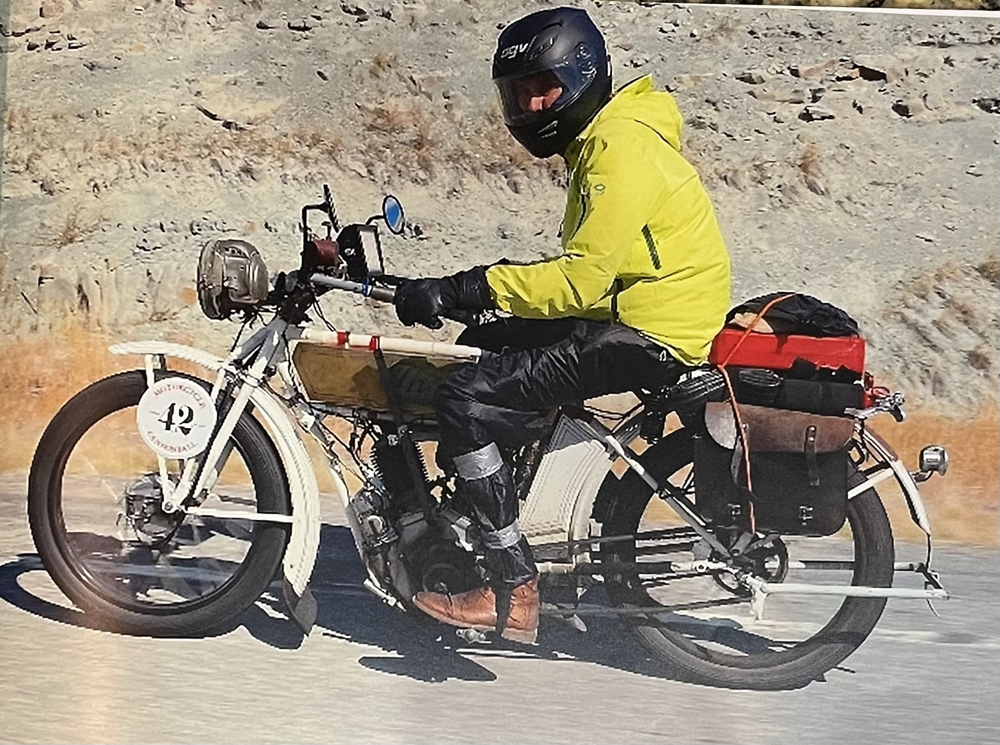

My Dad's Motorcycles
The 1949 Harley-Davidson
The 1949 Harley Davidson was initially bought in 1995 from a storage unit in New Mexico. When my dad bought it, it was a box of parts. There was no paint on either the frame, rims, fenders, or fuel tank. My dad was hesitant at first about purchasing the bike due to the amount of work that would need to go into it, but he saw the potential and took up the challenge.
The first thing that he did after purchasing the bike was attempt to put all of the pieces together. He managed to get most of the parts to fit onto the frame, but he realized that the engine did not fit quite like he wanted. Instead of using the original motor. He acquired an old World War II engine that fit with the frame perfectly.

Because of the new engine, the bike had to be converted from a battery and coil to the older style of electricity called a magneto. This magneto was securely fitted to the frame and engine and tied to spark plugs. The engine was then fired up and he could finally ride it.The bike was then painted and remains how it is today.
For many people trying to learn how to ride older motorcycles, this one is the best. For every one of my dad’s friends, he lets them try the Harley first to get used to the different style of riding. With the foot clutch and the hand shifter, older bikes can be a challenge to ride. Learning on an easy and comfortable bike like the Harley can be a good gateway into the more difficult motorcycles.
The 1930 Henderson
The Henderson is by far my favorite motorcycle. I love how crazy it looks with the four cylinders. The Henderson is also the most recent of my Dad’s working motorcycles. He bought the bike in 2021 from the son of the original owner. Because of how recently he acquired the bike, there are not very many improvements that he has made to it. There were certain parts that were not exactly correct to the year, so that was the first thing on his list.
Once he had finished making the bike more equivalent to one of its time, he then had the idea of making it similar to the police bikes of the early thirties. The 1930 Henderson was the bike that had broken the land speed record during that time, so it was an ideal bike for police officers. The only difference between my dad’s bike and the motorcycle cops was the rim color. To better match the cops, he painted the rims black.
This condition is where the Henderson currently sits. Not much has been done to it but it is a very fun motorcycle to ride and work on. It is the only bike in my dad’s collection that can reach highway speeds, although he does not take it on the freeways. I will continue to love this motorcycle and will take care of it as time passes. It is a wonderful piece of machinery and is a very fun ride.
The 1913 Thor
Back in 2015, my father had the idea of wanting to build a motorcycle that he had never attempted to build before. He was told of this bike from a friend of his and he was immediately hooked with how little he knew about the brand. The 1913 two-cylinder Thor motorcycle was one that not very many people knew about. Everyone has heard of an Indian or a Harley, but not a Thor. This bike has a special place in my dad's heart and it will forever be one of his favorites.
When he first bought the motorcycle, he had told my mom that it would need some putting together. My mom was not prepared for what condition the motorcycle would be. When he had brought it home that day, my mom came outside to see the bike, only to bear witness to a pile of random parts. There was no bike at all, but a bunch of parts that would eventually turn into her favorite motorcycle.
Over the next 3 years, my dad would work with his friends and my grandpa to rebuild the bike until it reached its final state where he would then compete in a race known as the “Motorcycle Cannonball”. This race takes place every 2 years. He competed in the 2018 race which consisted of over 100 men and women who had built bikes 90 years old or older and rode them across the country from Portland, Maine to Portland, Oregon.
Every day over the month-long race, there were a certain number of miles that the bikes had to make to reach the next checkpoint. If a bike was unrideable by the time a tow truck would reach it, the motorcycle would be strapped to the bed and towed the rest of the miles. Despite the rough start and the constant fixing of various parts, he managed to complete about three-fourths of the race without being towed.
He loved competing in the race and made many amazing friends. He would like to do the race again, but does not plan on it any time soon. It was very difficult and he was exhausted from spending every night repairing the motorcycle. I would love to compete in the race with him someday but on a more modern bike that does not take as much effort such as the Thor. The bike currently sits in our garage and he rides it every once in a while on weekends or for special occasions.